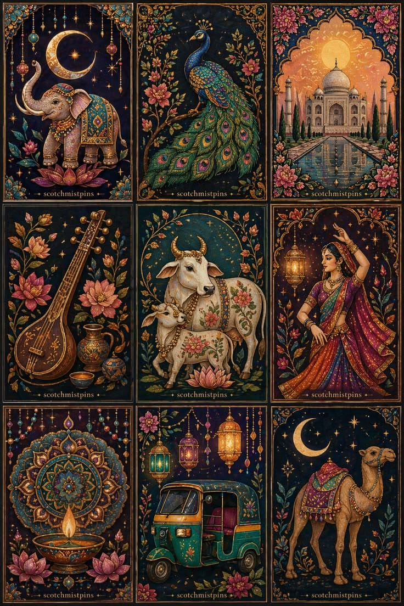

Meaning & Significance
From Sanskrit Chitra (visual image) and Sandhi (harmonious union). Reconstructs fractured stone reliefs, sanctums, and monolithic rock-cut shrines that have weathered centuries.
Gameplay Rules
Slide adjacent stone tiles on a 3x3 geometric grid into the open matrix slot until the sacred monument is restored to structural perfection. Completing under 40 moves awards the maximum bonus.
Archaeological Context: Encodes the monolithic top-down basalt excavation of Ellora Cave 16 (Kailasa Temple), chiseled under Rashtrakuta King Krishna I without joints or mortar.